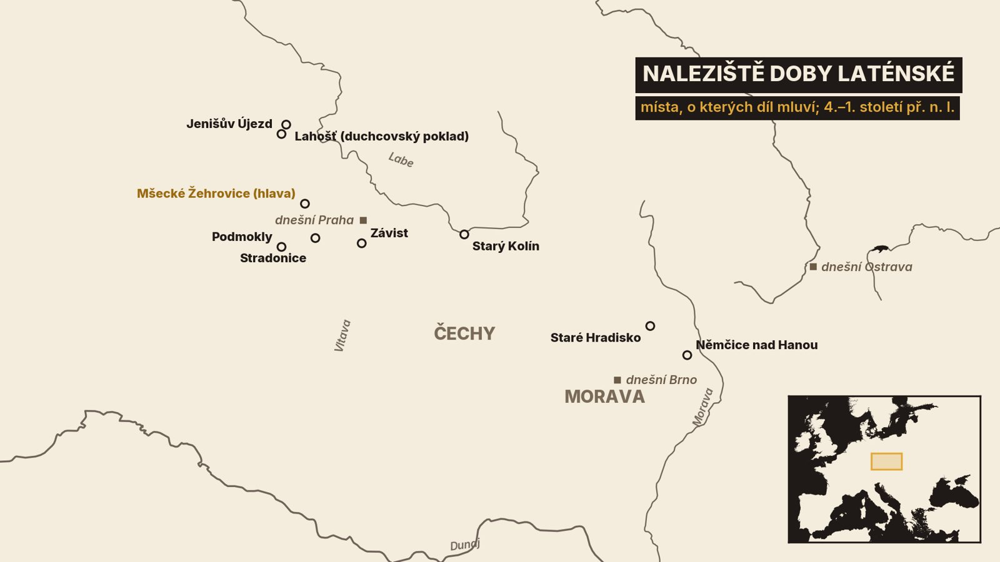
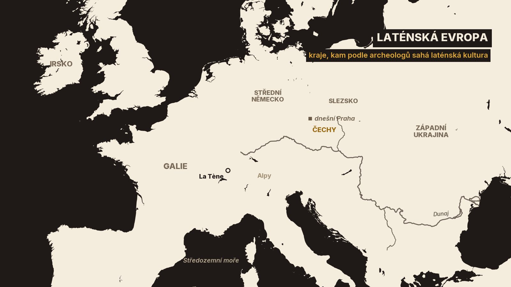
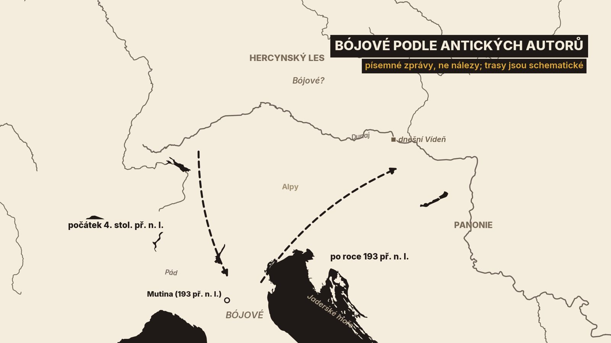
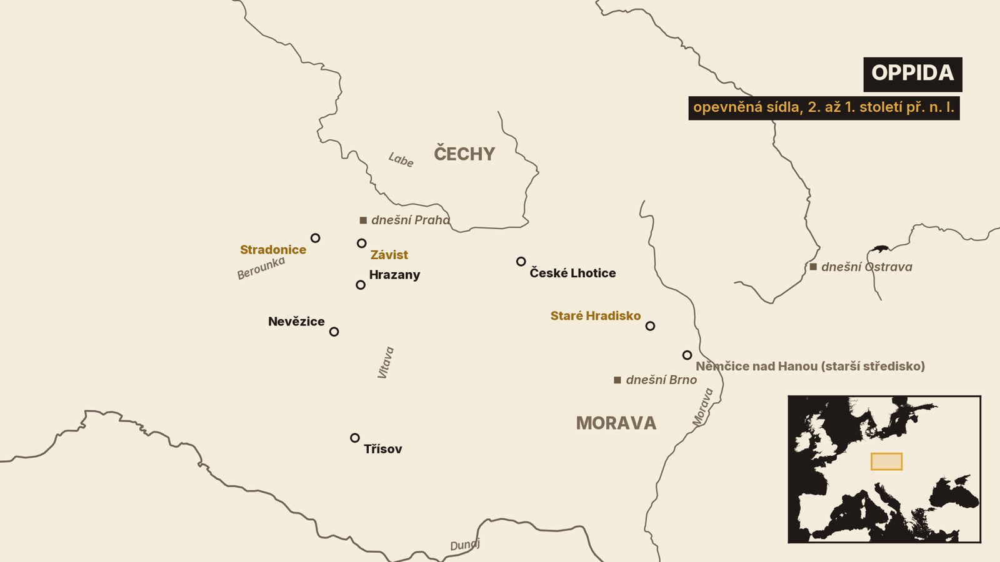

1. Hlava z pískovny
V květnu roku 1943 upravoval Josef Šlajchrt svou pískovnu u Mšeckých Žehrovic na Rakovnicku. Zloději mu z ní předtím načerno brali písek a terén bylo potřeba srovnat[7][8]. V zemi přitom našel několik kusů kamenné hlavy[7].
Nenechal si je. Oznámil nález správci muzea v Novém Strašecí a ten dal vědět Státnímu archeologickému ústavu v Praze. Ještě téhož roku na místě kopal archeolog Ivan Borkovský[7].
Hlava je vytesaná z opuky, místního kamene[1][7]. Dnes je složená ze čtyř částí. Úlomek s levým uchem chybí a nenašel se ani později[7]. Muž má knír, na krku nákrčník a vzadu vyholenou hlavu[1][7]. Archeologové sochu kladou do 3. století př. n. l.[1][7]. Patří k nejznámějším nálezům doby laténské z Čech a je ve sbírkách Národního muzea[1][7].
Koho ta tvář zobrazuje? Boha, hrdinu, nebo kněze? K tomu se dostaneme. V tomto díle projdeme zhruba čtyři a půl století: od hrobů bojovníků přes první mince až po velká opevněná sídla, kterým říkáme oppida. A skončíme u jména Bohemia.

Jedna věc je oproti minulým dílům nová. O střední Evropě teď poprvé píšou také antičtí autoři[1]. Budeme proto pečlivě rozlišovat, co říkají nálezy a co říkají texty. Ty dvě řeči se totiž ne vždy shodnou.
Začneme tím, kdo vlastně Keltové byli.
2. Keltové a laténská kultura
Jméno Keltové známe od Řeků. První zprávu o nich zapsal historik Hérodotos v 5. století př. n. l.: řeka Dunaj podle něj pramení v zemi Keltů[1]. Antičtí autoři těm lidem říkali také Galové[1]. Mysleli tím barbary, kteří žili na sever a na západ od Alp[1].
Archeologové mají vlastní pojem: laténská kultura. Jmenuje se podle naleziště La Tène u Neuchâtelského jezera ve Švýcarsku[1]. Poznáme ji hlavně podle společného stylu výzdoby na špercích, zbraních a nádobách[1]. Nálezy této kultury sahají od Irska až po západní Ukrajinu[1].
A teď důležité upozornění. Keltové jsou pojem historiků a jazykovědců. Laténská kultura je pojem archeologů. Historie a jazykověda kladou Kelty zhruba tam, kde archeologie nachází laténskou kulturu[1]. Meč ani spona ale neřeknou, jakou řečí jejich majitel mluvil a ke kterému kmeni se hlásil[1]. Když tedy v tomto díle říkám Keltové, myslím tím lidi laténské kultury, které tak nazvali jejich jižní sousedé.
Čechy k laténské Evropě patřily. Laténská kultura postupně pokryla skoro celé jejich území. Výjimkou byl sever Čech, kudy vedla severní hranice celé laténské kultury[1].

Nový styl se tu objevil už v 5. století př. n. l.[16]. Tehdy ještě doznívala doba halštatská, kterou skončil minulý díl. Archeologové proto tento nejstarší laténský úsek počítají k jejímu závěru[1][16]. Patří k němu nejbohatší mužské hroby té doby, kterým se říká knížecí. Jsou v nich dvoukolové vozy, meče a bronzové nádoby dovezené z jihu[16]. A hradiště Závist nad Vltavou tehdy patřilo k nejdůležitějším střediskům v Čechách[3]. Ještě se na ně vrátíme.
Jak se sem dostala? Římský historik Livius o tom vypráví příběh. Podle něj vládl Keltům v Galii král Ambigatus a země byla přelidněná. Poslal proto dva synovce hledat nová sídla. Segovesovi určil los Hercynský les, Bellovesovi bohové ukázali cestu do Itálie[12]. Hercynským lesem antičtí autoři mínili lesy, které se měly táhnout od pramenů Dunaje až ke Karpatům[1].
Je to legenda. Livius psal na přelomu letopočtu a děj klade do doby římského krále Tarquinia Priska, tedy o celá staletí dřív[1][12]. Odborníci jeho vyprávění označují za mýtus[1].
Co o těch stoletích říkají samotné nálezy, ukazují hlavně hroby.
3. Hroby bojovníků
Na počátku 4. století př. n. l. se v Čechách během krátké doby změnil pohřební zvyk. Dosud lidé své mrtvé většinou spalovali. Teď je začali ukládat do země nespálené, do hrobů bez mohyl[1]. Archeologové těm hřbitovům říkají plochá kostrová pohřebiště. Leží hlavně v severní polovině Čech[1].
Největší známe z Jenišova Újezdu na Teplicku. Na konci 19. století tam bylo prokopáno nejméně 120 hrobů[1]. Je to dodnes největší pohřebiště tohoto druhu ve střední Evropě a pohřbívalo se na něm po celé čtvrté a třetí století[1].
Co v hrobech leží? Část mužů dostala do hrobu zbraně: železný meč a většinou také kopí a štít[1]. Ženy s bohatou výbavou mají bronzové nánožníky, náramky, spony a někdy nákrčník. Později přibývají náramky z černé švartny a ze skla[1].
Ke stejné době patří i slavný nález z roku 1882. V termálním Obřím prameni v Lahošti u Duchcova ležel bronzový kotel a v něm nejméně dva tisíce bronzových předmětů, hlavně spon a kruhových šperků[1]. Podle tohoto nálezu dostal jeden typ spony jméno, které se používá dodnes: duchcovská spona[1].
Znamenají nové hroby, že přišli noví lidé? Starší výklad odpovídal ano. Opíral se o antické zprávy a viděl v pohřebištích stopu velkých kmenů, které obsadily novou zemi[1]. Od šedesátých let minulého století se prosazuje opačný názor: že se tu dál vyvíjelo domácí obyvatelstvo[1]. Dnes se změna vykládá hlavně jako výměna elit, provázená proměnou společnosti a víry[1]. Podle současného hodnocení nálezů se pohybovaly spíš jen malé skupiny, vojenské nebo jiné[1].
Rozhodnout by to mohly přírodovědné rozbory, které poznají, kdo z pohřbených vyrostl jinde[1]. Zatím to tedy zůstává otevřené.
Antické texty ale jeden kmen ze střední Evropy jmenují. Jsou to Bójové.
4. Bójové mezi Itálií a Hercynským lesem
Bójové vstupují do písemných pramenů na počátku 4. století př. n. l., když Keltové obsadili severní Itálii[1]. Podle antických autorů přišli odněkud ze severu, zpoza Alp[1][12]. Řecký historik Polybios je řadí mezi kmeny usazené za řekou Pádem, pod Apeninami[13].
S Římem pak Bójové opakovaně válčili[13]. V roce 193 př. n. l. je Římané porazili u města Mutina[1][12]. Zanedlouho se Bójové Římu vzdali a přišli skoro o polovinu své půdy[12]. Zeměpisec Strabón později napsal, že Bójové byli z Itálie vyhnáni a odešli do krajů kolem Dunaje[11].
Vrátili se tedy do Čech? Tady musíme být opatrní. Antické zprávy mluví o Bójích mnohokrát, ale nikdy výslovně ve spojení s územím Čech[1]. Neříkají ani to, jestli po porážce v Itálii odešli také sem[1].

Nejblíž je zpráva, kterou Strabón převzal od staršího učence Poseidónia. Bójové prý dříve sídlili v Hercynském lese. Napadli je tam germánští Kimbrové, ale Bójové je odrazili[11]. Badatelé ten střet kladou do let 120 až 113 př. n. l.[1].
Bójové dříve sídlili v Hercynském lese
Hercynský les ale není totéž co Čechy. Kde přesně Bójové žili, je dodnes předmětem diskuse. Zdá se nepochybné, že šlo o střední Evropu na sever od Dunaje. Není ovšem jasné, jestli jim patřily celé Čechy, jen jejich jih nebo západ, nebo i sousední Bavorsko[1]. A Bójové tu nemuseli být sami. Římský vojevůdce Caesar klade k Hercynskému lesu ještě jiný keltský kmen[1].
A co archeologie? V hrobech z Čech se našly šperky, které pocházejí ze severní Itálie, například nákrčníky z krouceného drátu[1]. Dokládají, že obě oblasti byly ve styku. Jméno kmene na nich ovšem napsané není.
Bójové v Čechách jsou tedy předpoklad, se kterým odborníci běžně pracují. Jistota to není[1].
Vraťme se teď na Rakovnicko, k hlavě z pískovny. Archeologové se tam po letech vrátili také.
5. Dvorec u Mšeckých Žehrovic
V letech 1979 až 1988 zkoumali archeologové místo nálezu znovu[1]. Ukázalo se, že hlava neležela v osamělé jámě. Hned vedle stával celý areál a měl dvě období.
Nejdřív tu byla neohrazená osada řemeslníků. Tavili železo a hlavně zpracovávali švartnu[1]. Švartna je černá hornina, která na Rakovnicku a Slánsku vychází na povrch. Vyráběly se z ní hlavně kruhy a náramky[1].
Později na stejném místě vyrostl pravoúhlý dvorec. Nejprve ho chránila dřevěná ohrada, potom val s příkopem. Valový areál tvořily dvě čtvercové části, každá o rozloze kolem jednoho hektaru. V jedné stál velký dům neobvyklé stavby[1].
Kdy přesně? Tady narážíme na mez jedné metody. Radiokarbonové datování je pro léta 800 až 200 př. n. l. nepřesné a dává jen široká rozpětí[1]. Archeologové proto datují hlavně podle předmětů. Stavbu a přestavbu velkého domu tak kladou do doby kolem let 170 až 140 př. n. l. Mladší z obou dat je nejisté[1].
Podobným čtyřúhelníkovým valům se dlouho říkalo svatyně. Výzkum v Mšeckých Žehrovicích ten výklad změnil. Dnes se takové areály vykládají jako dvorce, tedy sídla místní elity, kde se bydlelo, hospodařilo, shromažďovalo a nejspíš i konaly obřady[1].
A hlava? Její zlomky ležely v jámě vně ohrazení[1]. Původně ji badatelé měli za obraz božstva[1]. Novější výklad vychází z účesu. Vyholená zadní část hlavy a pás vlasů mohou označovat druida, tedy příslušníka kněžské vrstvy, o které píšou antičtí autoři[1][7]. Socha podle tohoto výkladu zobrazuje váženého předka, kterého místní rod uctíval jako hrdinu[1][7].
Je to výklad, ne popiska. Žádný nápis socha nemá. Jisté je jen to, že se dochovala rozbitá a že její zlomky ležely v jámě[1][7].
Zatímco na Rakovnicku stál dvorec, na kopcích nad Vltavou a Berounkou rostlo něco mnohem většího.
6. Oppida
Říkáme jim oppida. To slovo použil Caesar pro opevněná sídla v Galii a archeologové ho převzali[1]. Oppidum je rozlehlé, silně opevněné sídlo na výšině, obvykle o desítkách hektarů[1].
V Čechách jich dnes známe šest: Závist, Stradonice, Hrazany, Nevězice, Třísov a České Lhotice[1][15]. Všechna leží v pahorkatinách střední, jižní a východní části země, vysoko nad údolími řek[1]. Na Moravě k nim patří Staré Hradisko na Prostějovsku[1][5]. Česká oppida vznikala kolem poloviny 2. století př. n. l.[1][3].
Začněme Závistí, na kopci nad Vltavou jižně od Prahy[3]. Na místě staršího hradiště tu vzniklo patrně nejstarší oppidum na sever od Alp[1][3]. Opevněná plocha se postupně zvětšovala, až dosáhla 118 hektarů[1]. Archeologický atlas počítá se všemi předhradími skoro dvě stě hektarů[3].
Hradbu si nepředstavujme jako hliněný násep. Čelo tvořila zeď z kamenů kladených nasucho, zpevněná svislými trámy, a za ní bylo těleso z hlíny a dřeva[1]. Vysoká bývala tři až tři a půl metru[1]. Dřevo ovšem hnilo. Jedna hradba mohla vydržet 25 až 30 let a pak se musela stavět znovu[1]. Na Závisti archeologové rozlišili pět stavebních fází opevnění[1].
Bylo to jen kvůli obraně? Nejspíš ne. Hradby a brány podle dnešních názorů ukazovaly také postavení a prestiž místa[1].
Druhé velké oppidum, Stradonice nad Berounkou, mělo kolem 90 hektarů[1][4]. Jeho osud je smutný. Po nálezu zlatých mincí je na konci 19. století rozkopali hledači pokladů. Kovové předměty prodávali sběratelům a kosti z vykopaných vrstev do cukrovaru[4]. I tak odtud pocházejí tisíce předmětů a jedna z největších sbírek laténského skla v Evropě[1]. Jsou mezi nimi věci z Itálie: lékařské nástroje a také psací náčiní[1].
Kolik lidí tu žilo? Odhady bývají přehnané. Archeologové, kteří Závist zkoumali, soudí, že na Závisti a ve Stradonicích si lze představit i nějakou tisícovku obyvatel. Na malých Nevězicích sotva sto až dvě stě[1]. Jsou to odhady podle hustoty zástavby, ne sčítání[1].
Jisté je, že se na oppidech vyrábělo: kovalo se železo, odléval bronz, zpracovávalo sklo a jantar a razily se mince[1]. Jestli odtud někdo také vládl celému kraji, na tom se badatelé neshodnou[1].
Na Moravě byl vývoj trochu jiný. V Němčicích nad Hanou leželo už před vznikem oppid velké neopevněné středisko[1][6]. Našlo se tam přes dva tisíce mincí a podle autorů výzkumu také nejstarší dosud doložená sklářská dílna na sever od Alp[6]. Podobné středisko leželo na téže obchodní cestě v Roseldorfu v Dolním Rakousku[6]. Staré Hradisko pak kontrolovalo dálkový obchod mezi Baltem a severní Itálií. Zpracovával se tu baltský jantar[5].

Jantar, sklo a víno z jihu[1][5]. Kde je obchod, tam bývají i peníze.
7. Zlaté duhovky
Lidé jim odedávna říkali duhovky. Je to volný překlad německého slova, které je doložené už na počátku 17. století[1]. Lidé věřili, že se takové mince najdou tam, kde se duha dotkla země[17]. Nálezy těchto mincí totiž budily pozornost dávno předtím, než vznikla archeologie[1].
První mince se u nás začaly razit kolem poloviny 3. století př. n. l. Přesná data jsou tu ale jen rámcový odhad[1]. Nebyl to domácí nápad. Nejstarší kusy napodobují zlaté statéry Alexandra Velikého: na líci hlava bohyně Athény v přilbě, na rubu stojící bohyně vítězství Niké[1]. S takovými mincemi se nejspíš setkávali keltští žoldnéři v řeckých zemích[1]. Statér vážil asi osm a půl gramu zlata[1].
Časem se obraz měnil, až z něj zbyl jen hrbol na jedné straně a paprsky s půlměsícem na druhé. Těmto mincím se říká mušlovité statéry. Co obraz znamená, nevíme. Mušle to téměř jistě není[1]. Právě tyto mince se razily v době oppid[1].
Odborníci mluví o bójských mincích. Je to ale spíš jméno pro celý systém ražby než cedulka s názvem kmene. Stejné mince se totiž hojně nacházejí i v Rakousku na sever od Dunaje a na jihozápadním Slovensku[1].
Největší poklad přišel na svět v roce 1771 u Podmokel na Rokycansku. V bronzovém kotli leželo podle odhadů pět až deset tisíc zlatých mincí[1]. Vážily třicet až padesát kilogramů[1]. Více než 99 % nálezu skončilo v tavicí peci[1]. V kotli byl i zlatý kroucený kruh. Proto se uvažuje, že šlo o oběť bohům. Stejně dobře to mohl být poklad kmene nebo jeho náčelníka[1].
Podobně dopadl poklad ze Stradonic z roku 1877. Asi sedm set mincí leželo původně v koženém měšci a téměř všechny byly roztaveny[1]. Největší poklad, který se dochoval, pochází ze Starého Kolína: přes tři sta zlatých mincí[1].
Mince prozrazují i dálkové styky. Ve Stradonicích se našly peníze z Bavorska a z Galie a také bronzové mince numidského krále Massinissy a jeho nástupců[1].
Ražba mincí nebyla věc jednotlivce. Někdo ji musel zajišťovat a kontrolovat, například v rámci celého kmene[1].
Přesto ten svět během několika desetiletí skončil.
8. Konec oppid a jméno Bohemia
Jednu věc o lidech z oppid nevíme vůbec: kde jsou jejich mrtví. Pohřbívání na plochých pohřebištích skončilo ještě před vznikem oppid. Z doby oppid neznáme z Čech jediný jistý laténský hrob[1]. Možná se s těly zacházelo způsobem, který v zemi nezanechal stopu[1].
A pak končí i oppida. Kdy přesně, je sporné. Archeologický atlas klade jejich konec k polovině 1. století př. n. l.[3][4]. Autoři výzkumu Závisti a Stradonic ho podle nálezů datují až k době kolem roku 30 př. n. l.[1]. Bezpečnější je tedy rozpětí: mezi polovinou století a jeho posledními desetiletími.
Co se stalo? Jedno vysvětlení nemáme. V nálezech z té doby se objevují předměty cizích kultur ze severu a severozápadu[1]. Laténské osídlení zřejmě zesláblo[1]. Laténská keramika a kamenné mlýnky se ale nacházejí ještě v osadách další kultury, rozšířené hlavně ve středním Německu[1]. Konec laténské kultury se proto obvykle spojuje s příchodem prvních Germánů[1]. Někteří badatelé v tom vidí střídání obyvatel, jiní postupné splynutí zbytku starého obyvatelstva s nově příchozími[1].
Písemné zprávy mezitím sledují Bóje jinde. V roce 58 př. n. l. táhne část Bójů s Helvécii do Galie, jak píše Caesar[14][1]. Někdy kolem poloviny století pak Bóje v Panonii, na středním Dunaji, porazili Dákové[1][11]. Strabón, který o tom píše, rok neuvádí. Jmenuje jen dáckého krále Burebistu[11]. Česká syntéza klade porážku k letům 41/40 př. n. l.[1]. Jestli to byli Bójové z Čech, prameny neříkají[1].
Zůstalo ale jméno. Strabón na počátku našeho letopočtu píše o místě zvaném Buiaimon v Hercynském lese. Sídlí tam už Marobud, král germánských Markomanů[11][2]. Římský důstojník Velleius Paterculus zná stejnou zemi jako Boiohaemum[10]. A historik Tacitus v roce 98 našeho letopočtu napsal: „Dosud trvá jméno Boihaemum a připomíná dávnou minulost místa, třebaže se obyvatelé změnili.“[9][2]
Dosud trvá jméno Boihaemum a připomíná dávnou minulost místa, třebaže se obyvatelé změnili.
Boiohaemum znamená země Bójů[1]. Z tohoto jména vzniklo slovo Bohemia[11].
Všimněte si, co ty tři zprávy říkají a co ne. Všechny pocházejí z doby, kdy v zemi už vládli Germáni. Dokládají, že kraj nesl jméno po Bójích. Jeho přesné hranice ale neudávají. S Čechami ho spojují až badatelé[1][2].
Možná po Keltech zůstalo ještě něco. Za keltská se pokládají antická jména některých českých pohoří. U řek, jako je Labe nebo Ohře, dává dnešní jazykověda přednost původu ještě staršímu[1].
Shrňme si, co si z doby laténské odnést.
9. Co si odnést
Za prvé: Keltové jsou jméno z antických textů, laténská kultura je pojem archeologů. Obojí se zhruba kryje, ale předměty samy jazyk ani kmen neprozradí[1].
Za druhé: od počátku 4. století př. n. l. známe z Čech plochá pohřebiště s hroby bojovníků a bohatě vybavených žen. Jestli je založili příchozí, nebo domácí lidé, zůstává otevřené[1].
Za třetí: Bóje jmenují jen antičtí autoři. Že sídlili v Čechách, je předpoklad. Kde přesně žili, se neví[1][11].
Za čtvrté: kolem poloviny 2. století př. n. l. vznikla oppida, například Závist a Stradonice. Vyrábělo se v nich, obchodovalo a razily se zlaté mince[1][3][4].
A za páté: oppida zanikla ve druhé polovině 1. století př. n. l. Jméno Boiohaemum, země Bójů, ale zůstalo a žije dál ve slově Bohemia[1][9][11].
Otevřené otázky zůstávají dvě. Koho zobrazuje hlava z Mšeckých Žehrovic? A co se stalo s lidmi z oppid: odešli, nebo splynuli s nově příchozími? První otázku možná nerozhodneme nikdy. S tou druhou mohou pomoci nové výzkumy.
Příště přijdou Germáni a s nimi poprvé i římské legie.